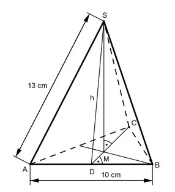

Pythagoras Aufgabe 56 Eine Pyramide hat als Grundfläche ein gleichseitiges Dreieck. Die Spitze der Pyramide liegt über dem Schwerpunkt des gleichseitigen Dreiecks. Berechnen Sie die Höhe h eines Seitendreiecks in cm, wenn die Grundseite a = 10 cm und die Seitenlänge k der Pyramide 13 cm ist.  In einem gleichseitigen Dreieck halbieren die Setenhalbierenden die Grundseiten und stehen auf ihnen senkrecht. Satz von Pythagoras im Dreieck DBC: DB = a/2 = 10 cm/2 = 5 cm a a a² = DC² + (---)² | -(---)² 2 2 a DC² = a² - (---)² 2 DC² = 10² cm² - 5² cm² = 75 cm² |√ DC = 8,7 cm Der Schwerpunkt teilt die Seitenhalbierenden im Verhältnis 2 : 1, also in 3 gleiche Teile. Bsp.: Die Strecke MC beträgt 2/3 von DS, die Strecke DM 1/3. Satz von Pythagoras im Dreieck MCS: CS = AS = 13 cm 2 2 CS² = MS² + MC² = h² + (--- * DC)² |-(--- * DC)² 3 3 2 MS² = CS² - (--- * DC)² 3 MS² = 13² cm² - 5,8² cm² = 135,4 cm² |√ Pyramidenhöhe MS = 11,6 cm Satz von Pythagoras im Dreieck MDS: 1 h² = MS² + (---DC)² 3 h² = 11,6² cm² + 2,9² cm² = 143 cm² |√ h = 12 cm